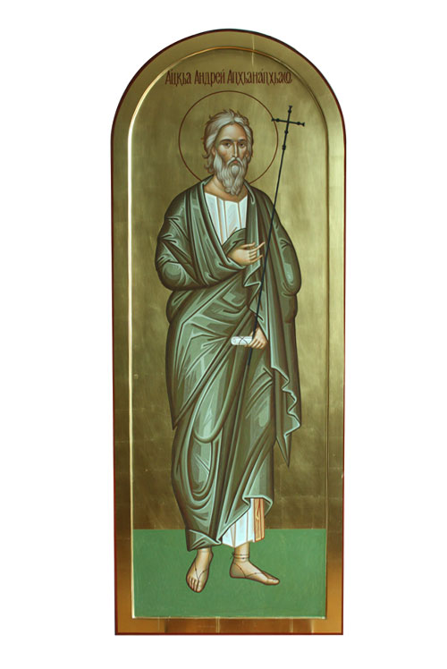

13 12 2011 (1978 дней 5 часов назад)

13 декабря (30 ноября по старому стилю)
Святой апостол Андрей Первозванный был родом из Вифсаиды Галилейской. К моменту призвания он жил в Капернауме, на берегу Геннисаретского озера вместе с братом Симоном (будущим Петром), занимаясь рыбной ловлей. С юных лет апостол Андрей отличался молитвенной устремленностью к Богу. Он не вступил в брак, и еще до призвания ко Христу был учеником святого пророка Иоанна Крестителя.
Согласно Евангелию от Матфея (4, 18-19), от Марка (1, 16-18) и от Иоанна (1, 35-40), призвание Андрея и Петра состоялось около Иордана близ Галилейского озера сразу после крещения Иисуса. Апостол Андрей стал первым учеником Христа (Первозванным) и первым исповедал Его Спасителем, приведя ко Христу своего брата Симона, будущего апостола Петра (Ин. 1, 40-42). На страницах Евангелия от Иоанна Андрей появляется еще дважды — он ведёт диалог с Иисусом о хлебах и рыбе перед чудом насыщения пяти тысяч людей (Ин. 6, 8-9) и вместе с апостолом Филиппом приводит к Иисусу Еллинов (Ин. 12,20-22).
После Воскресения и Вознесения Христова, свидетелем которого также был святой апостол Андрей, он возвратился в Иерусалим. Здесь в День Пятидесятницы вместе с другими апостолами и Пресвятой Богородицей, апостол Андрей исполнился Духа Святого (Деян. 1, 13; 2, 1-4), как предсказал Сам Господь (Деян. 1, 5).
О дальнейшей жизни апостола сообщают предания. С проповедью Слова Божия святой апостол Андрей совершил несколько путешествий, во время которых трижды возвращался в Иерусалим. Он прошел Малую Азию, Причерноморье, Скифию, Фракию, Македонию. Упоминания о миссии Андрея на Понте и в Скифии есть уже у писателей II века, детальные тексты деяний Андрея (хожений, обходов), создаются в III веке.
В обход Колхиды апостол Андрей двинулся вместе с апостолом Симоном Кананитом Предание относит это деяние ко времени «спустя 20 лет по Вознесении Христа Спасителя и Сошествия Святого Духа на апостолов». Апостолы прошли сюда через Каппадокию, Синопу и Трапезунт. Обойдя южную Колхиду, Осетию и Сванетию, апостолы разделились в Абхазии: апостол Андрей Первозванный ушел далее морем вдоль берега, посетив Анакопию (ныне Новый Афон), Питиунт (Пицунду), в Боспор, а апостол Симон Канаит остался здесь, в городе Севасте (нынешнем Сухуме) для проповеди христианства, и проповедовал по суше, также пройдя Анакопию и Питиунт в Зихию - землю джигетов, родственных абхазцам горцев (к нынешнему Новороссийску). На границе с Зихией в городе Никопсия апостол Симон принял мученическую кончину. Для погребения его апостол Андрей возвратился из Боспора и похоронил Симона на берегу реки Псырцха, близ Анакопии (нынешнего Нового Афона) в 55 году по Р.Х. Проповеданное ими христианское ученье распространилось в Абхазии и возросло. Римский наместник в Понте Плиний Младший в письме императору в начале II века свидетельствует о массовом распространении христианства по пути апостолов.
Уже в первых веках в Абхазии были церкви (в Пицунде найдены остатки церквей, которые датируются II-III вв.), были в Абхазии и служители апостольского ученья - пресвитеры и епископы. На первом Вселенском Соборе, в Никее в 325 году, присутствовал епископ пицундский Стратофил, в списке иерархов понтийской церкви поименованный вторым вслед за митрополитом, - обстоятельство, указывающее на значение христианства в Абхазии в то отдаленное время, когда например в соседней Иверии, как известно, вплоть до времени первого Вселенского Собора в IV веке и некоторого времени после него ещё не было церковной организации.
Из Синопы апостол Андрей предпринимает свои последние обходы. Вверх по Днепру апостол Андрей поднялся до местоположения будущего Киева, где водрузил крест на киевских горах. Продвигаясь далее на север, апостол Андрей дошел до поселений славян на месте будущего Новгорода. Отсюда апостол Андрей через земли варягов прошел в Рим и вновь вернулся в Синопу. По пути из Рима в Синопу в небольшом селении Византии (будущем Константинополе) он основал христианскую церковь, посвятив во епископа одного из семидесяти апостолов Христовых — Стахия.
Последний обход Андрея из Синопы затронул Крым, Приднестровье, Дакию, Фракию и Элладу. Последним городом, куда пришел святой апостол Андрей Первозванный и где принял он мученическую кончину, был город Патры.
Правитель города консул Эгеат приказал распять апостола. Чтобы продлить мучения апостола, Эгеат приказал не прибивать рук и ног его к кресту, а привязать их. По преданию, крест, на котором был распят святой апостол Андрей Первозванный, имел форму буквы "Х" и получил название "Андреевский крест".
Апостолы Андрей и Симон – признанные основатели Абхазской Апостольской православной церкви. Сегодня, 13 декабря (30 ноября по старому стилю) православные Абхазии чтят память Святого апостола Андрея Первозванного.
Согласно Евангелию от Матфея (4, 18-19), от Марка (1, 16-18) и от Иоанна (1, 35-40), призвание Андрея и Петра состоялось около Иордана близ Галилейского озера сразу после крещения Иисуса. Апостол Андрей стал первым учеником Христа (Первозванным) и первым исповедал Его Спасителем, приведя ко Христу своего брата Симона, будущего апостола Петра (Ин. 1, 40-42). На страницах Евангелия от Иоанна Андрей появляется еще дважды — он ведёт диалог с Иисусом о хлебах и рыбе перед чудом насыщения пяти тысяч людей (Ин. 6, 8-9) и вместе с апостолом Филиппом приводит к Иисусу Еллинов (Ин. 12,20-22).
После Воскресения и Вознесения Христова, свидетелем которого также был святой апостол Андрей, он возвратился в Иерусалим. Здесь в День Пятидесятницы вместе с другими апостолами и Пресвятой Богородицей, апостол Андрей исполнился Духа Святого (Деян. 1, 13; 2, 1-4), как предсказал Сам Господь (Деян. 1, 5).
О дальнейшей жизни апостола сообщают предания. С проповедью Слова Божия святой апостол Андрей совершил несколько путешествий, во время которых трижды возвращался в Иерусалим. Он прошел Малую Азию, Причерноморье, Скифию, Фракию, Македонию. Упоминания о миссии Андрея на Понте и в Скифии есть уже у писателей II века, детальные тексты деяний Андрея (хожений, обходов), создаются в III веке.
В обход Колхиды апостол Андрей двинулся вместе с апостолом Симоном Кананитом Предание относит это деяние ко времени «спустя 20 лет по Вознесении Христа Спасителя и Сошествия Святого Духа на апостолов». Апостолы прошли сюда через Каппадокию, Синопу и Трапезунт. Обойдя южную Колхиду, Осетию и Сванетию, апостолы разделились в Абхазии: апостол Андрей Первозванный ушел далее морем вдоль берега, посетив Анакопию (ныне Новый Афон), Питиунт (Пицунду), в Боспор, а апостол Симон Канаит остался здесь, в городе Севасте (нынешнем Сухуме) для проповеди христианства, и проповедовал по суше, также пройдя Анакопию и Питиунт в Зихию - землю джигетов, родственных абхазцам горцев (к нынешнему Новороссийску). На границе с Зихией в городе Никопсия апостол Симон принял мученическую кончину. Для погребения его апостол Андрей возвратился из Боспора и похоронил Симона на берегу реки Псырцха, близ Анакопии (нынешнего Нового Афона) в 55 году по Р.Х. Проповеданное ими христианское ученье распространилось в Абхазии и возросло. Римский наместник в Понте Плиний Младший в письме императору в начале II века свидетельствует о массовом распространении христианства по пути апостолов.
Уже в первых веках в Абхазии были церкви (в Пицунде найдены остатки церквей, которые датируются II-III вв.), были в Абхазии и служители апостольского ученья - пресвитеры и епископы. На первом Вселенском Соборе, в Никее в 325 году, присутствовал епископ пицундский Стратофил, в списке иерархов понтийской церкви поименованный вторым вслед за митрополитом, - обстоятельство, указывающее на значение христианства в Абхазии в то отдаленное время, когда например в соседней Иверии, как известно, вплоть до времени первого Вселенского Собора в IV веке и некоторого времени после него ещё не было церковной организации.
Из Синопы апостол Андрей предпринимает свои последние обходы. Вверх по Днепру апостол Андрей поднялся до местоположения будущего Киева, где водрузил крест на киевских горах. Продвигаясь далее на север, апостол Андрей дошел до поселений славян на месте будущего Новгорода. Отсюда апостол Андрей через земли варягов прошел в Рим и вновь вернулся в Синопу. По пути из Рима в Синопу в небольшом селении Византии (будущем Константинополе) он основал христианскую церковь, посвятив во епископа одного из семидесяти апостолов Христовых — Стахия.
Последний обход Андрея из Синопы затронул Крым, Приднестровье, Дакию, Фракию и Элладу. Последним городом, куда пришел святой апостол Андрей Первозванный и где принял он мученическую кончину, был город Патры.
Правитель города консул Эгеат приказал распять апостола. Чтобы продлить мучения апостола, Эгеат приказал не прибивать рук и ног его к кресту, а привязать их. По преданию, крест, на котором был распят святой апостол Андрей Первозванный, имел форму буквы "Х" и получил название "Андреевский крест".
Апостолы Андрей и Симон – признанные основатели Абхазской Апостольской православной церкви. Сегодня, 13 декабря (30 ноября по старому стилю) православные Абхазии чтят память Святого апостола Андрея Первозванного.